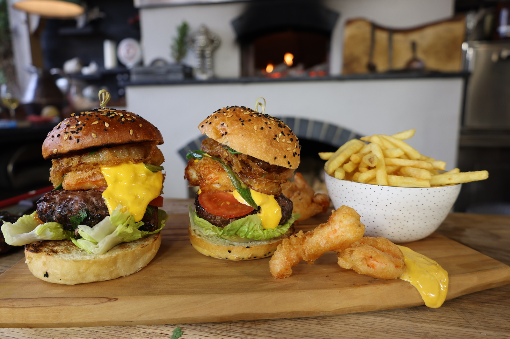

Description
Surf and Turf...the best of both worlds! Served as a giant burgers! Serve up with skinny fries for the perfect weekend treat!
Ingredients
600g minced beef
Salt and pepper
1 tbsp soy sauce
2 tbsp coriander, chopped
1 little gem lettuce
2 tomatoes, sliced
4 clotted cream buns
4 baby cucumbers
2 tbsp caster sugar
1 tbsp white wine vinegar
Splash of water
Better
150g self-raising gluten free flour
Cider
large onion, peeled and sliced
12 shelled prawns
Mayo
egg yolks
1 tbsp Dijon mustard
1 tbsp ponzu
200ml veg oil
Salt and pepper
To serve
Skinny chips
Steps
- Preheat the bbq until hot and the coals are white.
- Season the beef, add the soy and coriander mix by hand and shape it into rounds.
- Drizzle the burgers in a little veg oil then place the burgers on the grill and gently cook for five minutes. Flip the burgers over and continue to cook them for a further five minutes.
- Whisk together the flour and cider, dip in the prawns and onion rings then fry until crisp.
- Toast the brioche buns sliced side down.
- To cook the cucumbers, pop everything in a pan, bring to the boil then take off the heat.
- To make the mayo place the egg yolks and mustard in a small blender, blitz and slowly add the oil in a drizzle until thick. Finish with the ponzu.
- Fry the chips at 180c until crisp then drain and season.
- To serve the burgers, layer up the buns starting with the meat, topped with lettuce, tomato, pawns, onion rings, mayo and cucumber before securing with a stick. Pop the chips in a bowl.